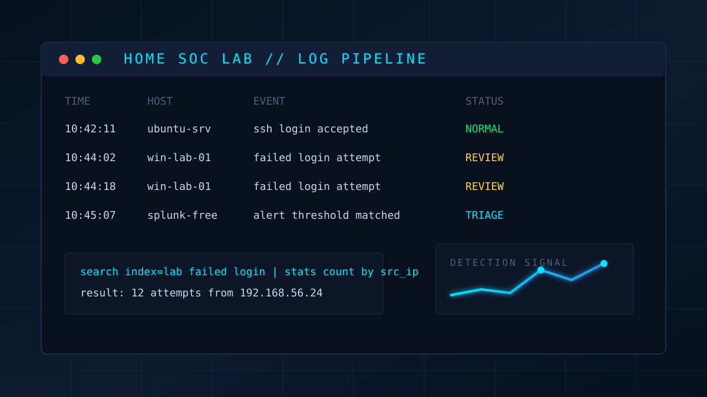

How I Am Building My First Home SOC Lab
A practical walkthrough of the tools, goals, and decisions behind my first personal SOC environment.
READ NOTENotes from labs, security concepts, detection practice, and the messy middle of learning cybersecurity in public.

A practical walkthrough of the tools, goals, and decisions behind my first personal SOC environment.
READ NOTEEarly lessons from spotting failed logins, suspicious timing, and patterns that matter to Tier 1 analysts.
READ NOTEThe learning path I am following: networking, Linux, SIEM basics, incident response, and hands-on labs.
READ NOTE